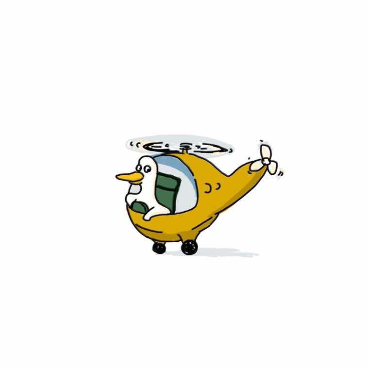
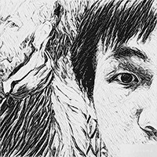
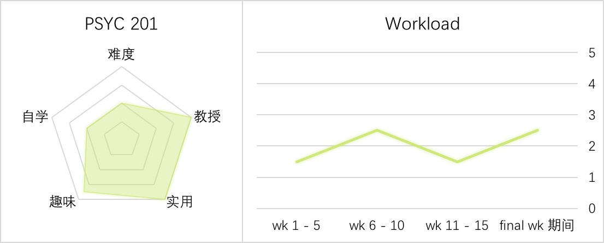
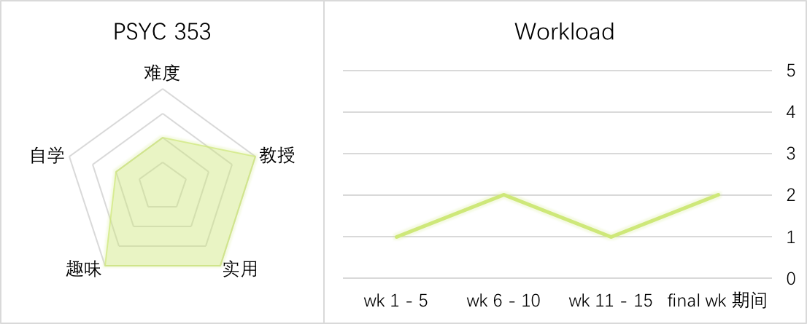

Intro Psych 心理学入门
Credit is not given for both PSYC 100 and either PSYC 103 or PSYC 105
Gen Ed: Behavioral Sciences

用心理概念解释生活现象
心理的入门课程，内容还算简单，但考试难且范围大，需要理解和运用学到东西。考试将涵盖两部分，课堂和书本，所以阅读量大。教授在课上会用大量的例子来解释名词定义，例子将是考试的重点，基本没有任何 slides，要在课上记大量的笔记。教授人很有趣，上完这门课你可以用心理概念来解释很多生活中的现象，只是想要一门水课的不建议上，对心理学有兴趣可以尝试。
 SP16 - Srull, T @拔丝光年对非专业也会很有收获的 GenEd
选择老师很重要，非常推荐我的老师 Sara Schmidt，上课清晰有趣，而且给分合理。PPT 尤其有用，基本上所有的知识点都做了总结梳理，复习时超方便。X Session 是小班课，在课上经常互动，理解也就更加深。只有考试没有作业，课上会有几个小 assignment，或是大家组队做 quiz，正确率算入总成绩。只要比美国小伙伴考得高普遍都是拿A+。做 subject pool 也可以拿 EC。
SP15 - Schmidt, S @Keiski. T别被蒙蔽双眼，心理其实很好玩
PSYC 100 是一门比某些 2 打头的心理还难的课，因为是 introduction 所以什么内容都要学，包括生物方面还有 abnormal 方面的，难词也要背，需要去当小白鼠赚学分。300 人大课：平时没有作业，考试全是选择题，Lecture + 课本，上课需要认真听因为之后教授不会给课件，认真听课认真就能考好，curve 不严。小班: 不同的 TA 上的风格不一样，有的很有趣有的完全听不下去，有 assignment，考试不难不简单，全是选择题。
SP15 - Srull, T @xst上课沉闷，大量待考的课本内容
作为一节导论课它最大的特征就是内容极多极碎，要不断的记很多小概念，起码要到能做对选择题的地步。这一步做好，考试的难度就不会太大。除此之外，还有很多要做的事情，包括去参加实验，quiz 以及课堂作业等等。 我们讲师的上课气氛比较沉闷，基本上由她带着，不会让你对心理学产生内在的兴趣，对因为兴趣来上这节课的学生来说，这是个不得不接受的事实。
 SP14 - Mu, W @之哲Intro to Social Psychology 社会心理学入门
Prerequisite: PSYC 100 or PSYC 103
Gen Ed: Behavioral Sciences
有趣实用，忍不住在生活中找参照
社会心理学谈到了自我认知、情感等很有意思的话题，很有用，学完之后在生活中会时不时想起里面的例子。课前需要阅读，去 UG L借来粗略看一下就好，上课还是讲的很详细的，课后完全没有作业，隔两周有小测，有一次 Midterm，只要认真复习 Cho 的讲义就完全没有问题。EC 的机会也非常有趣，当实验小白鼠。Cho 带出来的学生均分最高。
FA15 - Cho, S @头像是只灰色的猫唯一一门我从不翘课的课
这门课是我超级推荐的课，内容非常有趣，而且真心不难。Quiz 四次每次 20 题，一般考三至四章的内容，要认真听课看书，花一定的时间复习就很简单（绝对不是什么考前复习半小时就好，我第一次没看书就考得很差）。Assignment 六次，简单不费时，不超两页，而且基本满分。有一次 midterm 一次 final，个人认为比 Quiz 要简单。平时不算出勤，但布置assignment时一定会登记出勤，有去才给分。有 EC。
FA14 - Phan, W @xstSocial Cognition 社会认知
Prerequisite: PSYC 201 and PSYC 235, or consent of instructor
教授上课风趣幽默，爱一人饰多角演情景剧
教授上课很风趣幽默，特别爱演一人饰多角的小情景剧。Social cognition 的内容也非常有意思，最特别的是用的书--故事线和 research 穿插在一起的《social animal》。虽然只考 research 部分，但是考试考得相当细节，而且会考数据。不过书本身很受大家好评。最后一个小缺点就是每节课的 slides 只是一个几行的大纲，每节课都需要狂记笔记。不过要是笔记都记下来了，背好了，书也好好看了，考试拿 A 木有什么太大的问题。
SP15 - Srull, T @匿名